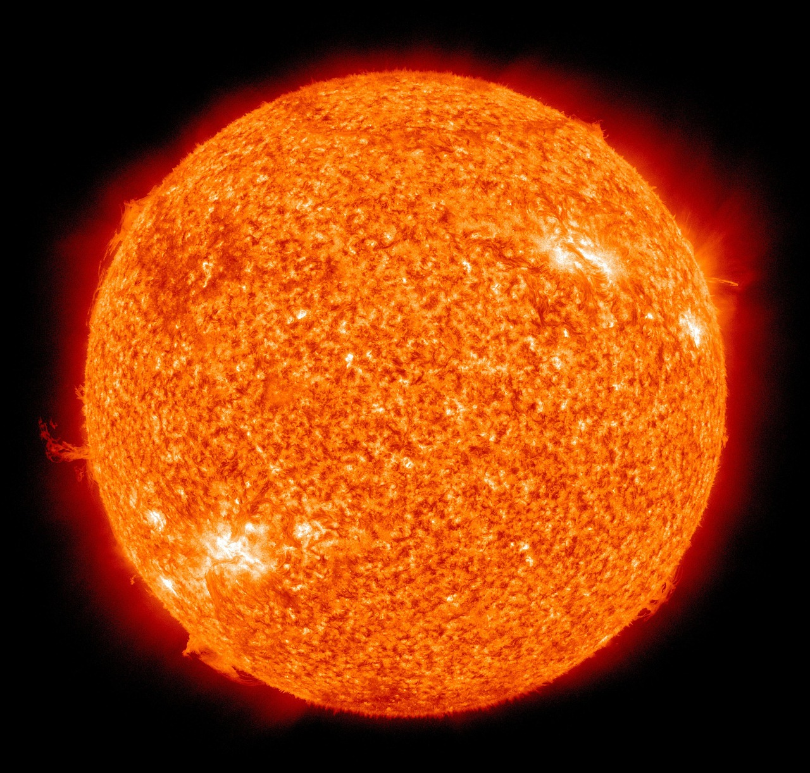
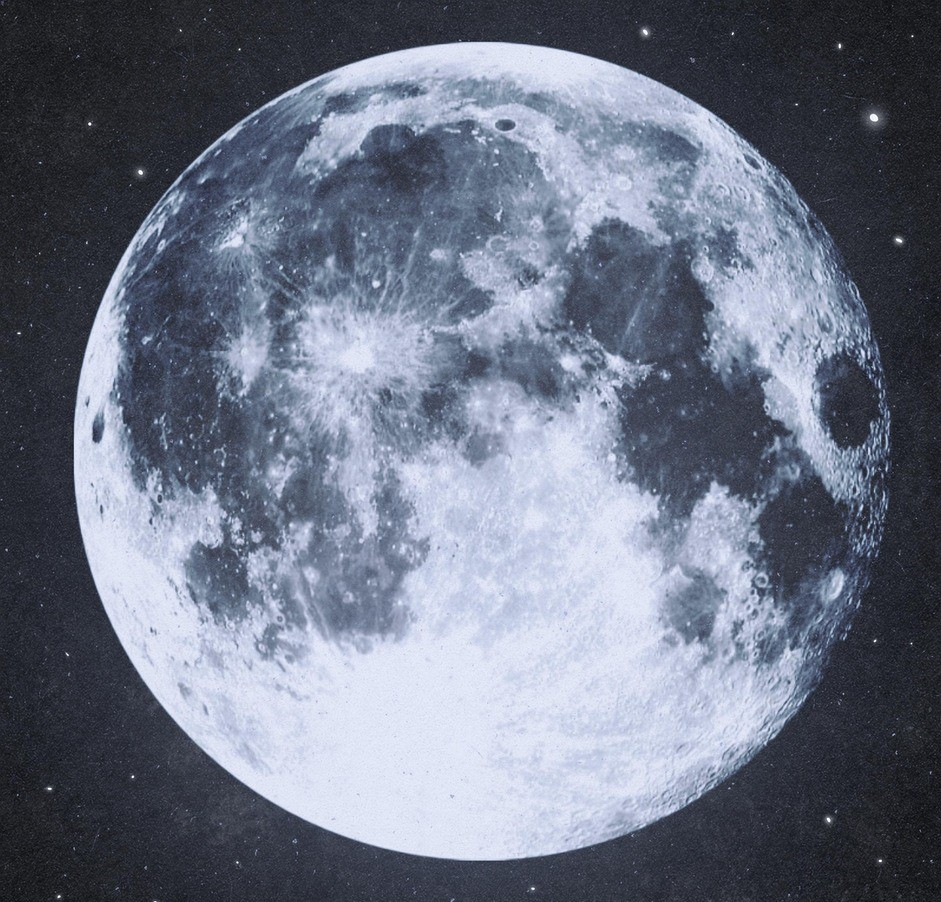
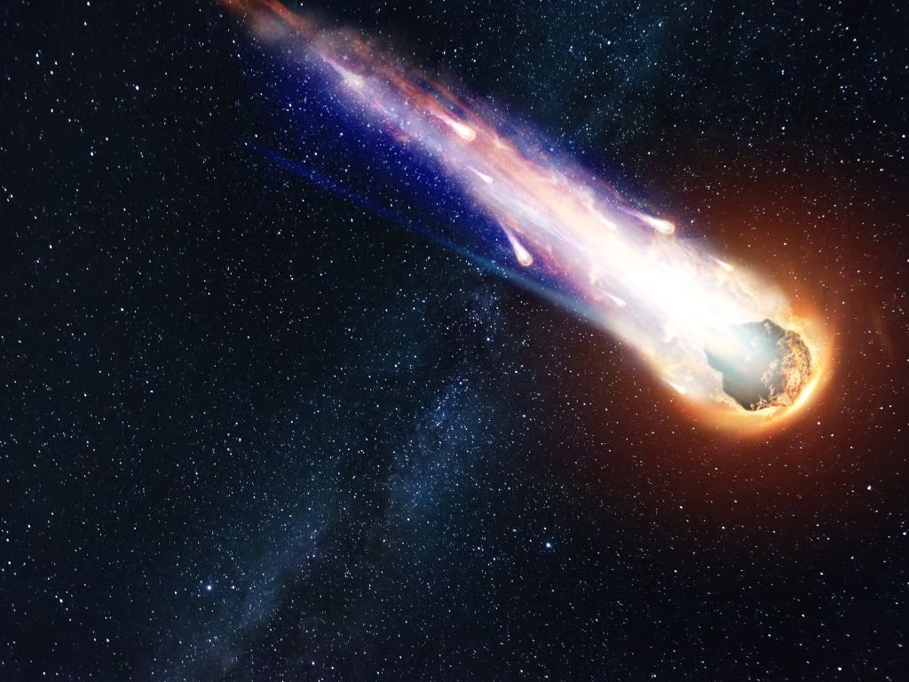

Worlds Beyond: The Hunt for Exoplanets

Thousands of planets have been discovered orbiting stars beyond our Sun...
- Discovery of Proxima Centauri b, the closest known exoplanet.
- The TRAPPIST-1 system with its seven Earth-sized planets.
- Using James Webb Space Telescope (JWST) to study exoplanet atmospheres.
The Dark Universe: Matter and Energy We Can't See

The visible matter we observe makes up only about 5% of the universe...
- Evidence from the Cosmic Microwave Background (CMB).
- Gravitational lensing effects caused by dark matter.
- The role of dark energy in cosmic acceleration.
Our Star: The Sun
The Sun is the star at the center of our Solar System. It is a nearly perfect sphere of hot plasma, heated to incandescence by nuclear fusion reactions in its core. Its energy powers life on Earth and drives space weather throughout the solar system.
- Classified as a G-type main-sequence star (G2V).
- Composed primarily of hydrogen (~74%) and helium (~24%).
- Surface temperature around 5,500 °C (9,940 °F); Core temperature about 15 million °C (27 million °F).
- Exhibits an 11-year cycle of solar activity, including sunspots, flares, and coronal mass ejections.
Earth's Companion: The Moon
The Moon is Earth's only natural satellite and the fifth largest moon in the Solar System. It plays a crucial role in stabilizing Earth's axial tilt and causing tides. Its surface is ancient, heavily cratered, and marked by dark volcanic plains called maria.
- Orbits Earth in about 27.3 days and is tidally locked (always shows the same face to Earth).
- Formed likely from a giant impact between early Earth and a Mars-sized body (Theia).
- Lacks a significant atmosphere, magnetic field, and surface water (though water ice exists in polar craters).
- Has been visited by numerous robotic missions and the Apollo human landings.
Cosmic Debris: Meteoroids, Meteors, and Meteorites (Ulkas)
Space is filled with small rocky or metallic bodies. A meteoroid is such a body in space. When it enters Earth's atmosphere, friction causes it to heat up and glow, creating a streak of light known as a meteor (or "shooting star," commonly referred to as 'ulka' in some languages). If a piece survives the fiery passage and lands on Earth's surface, it is called a meteorite.
- Meteoroids originate from asteroids, comets, or even planetary impacts.
- Meteors typically burn up completely in the atmosphere.
- Meteor showers occur when Earth passes through a trail of debris left by a comet.
- Meteorites provide valuable samples of extraterrestrial material for scientific study.